这一版可以审阅模型、货单和页面；装载密度、SKU 聚集及完整设备卸货尚未达到交付目标。
165 件未装入、13 个额外 SKU 分散块；回放首件高位人工操作受阻。CSV 浏览器上传受扩展权限限制，解析与往返测试已通过。当前未宣布视觉完成或出运就绪。
独立查看器和生产场景都已实看；完整截图随包提供，解压后 comparison.html 可直接打开。
最终产品结果：295 / 460 件、64.94%。尚未达到高密度装载目标。
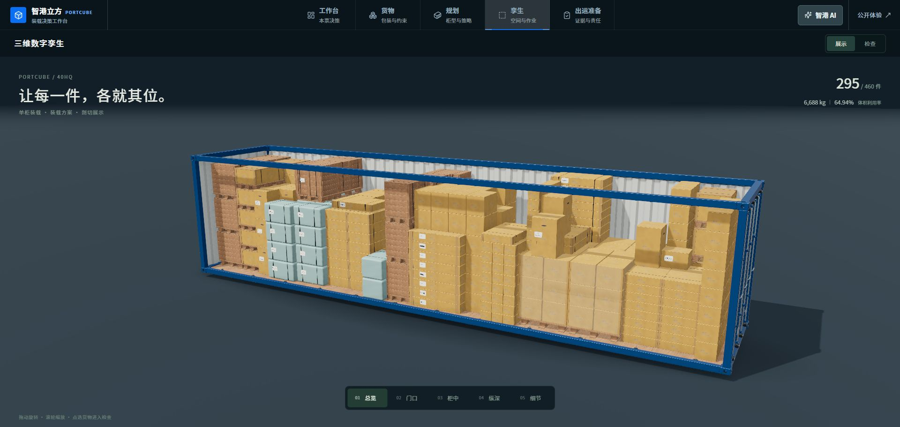
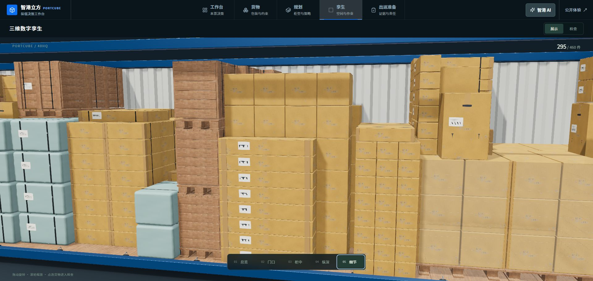
17 个规格资产；Blender 模型按真实外包络导出。独立查看器使用同一份完整几何，镜头针对单件适配，不能把两种镜头当作严格单变量对照。
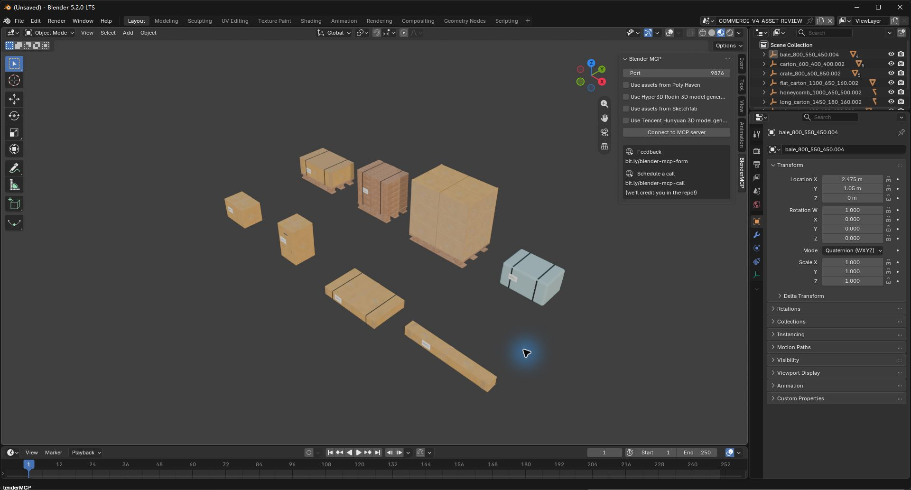
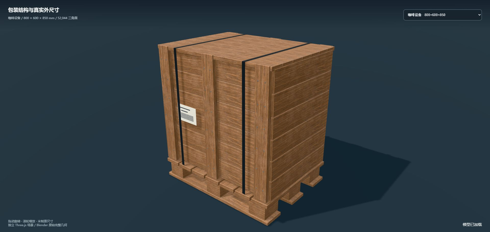
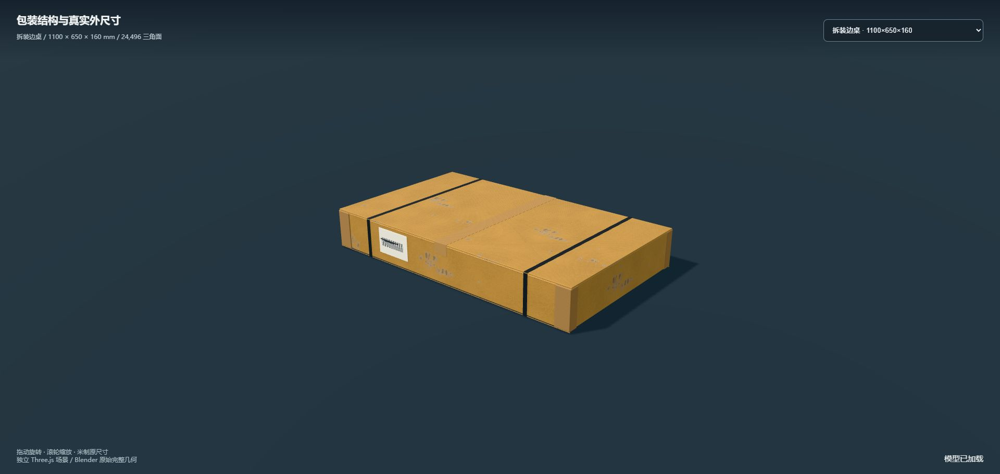
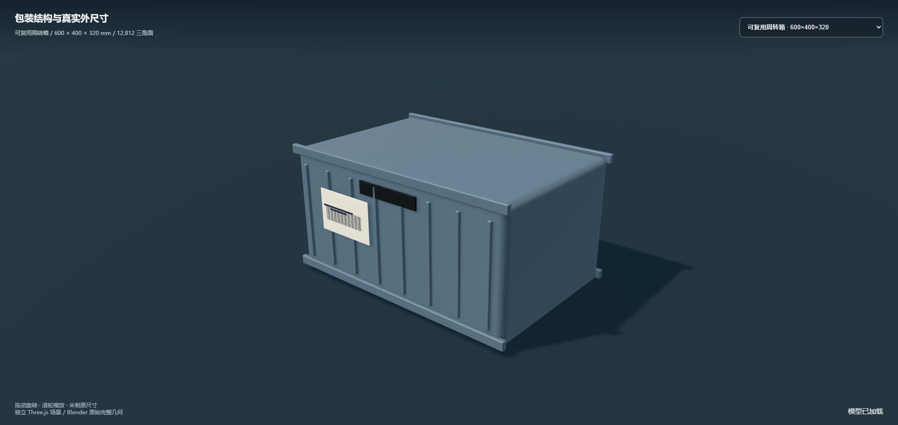
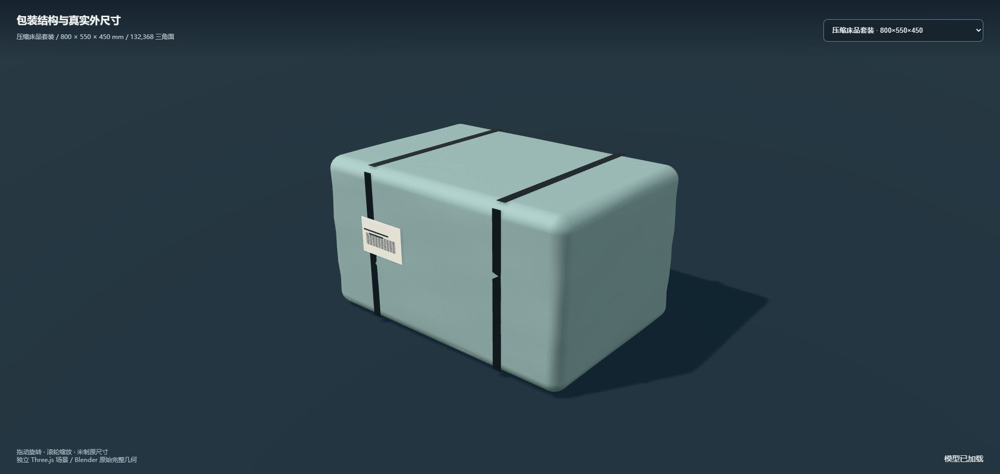
三批到仓与三组交接独立管理。LIFO 只表示已检查的几何卸货依赖；高位人工操作仍被实际回放阻断。
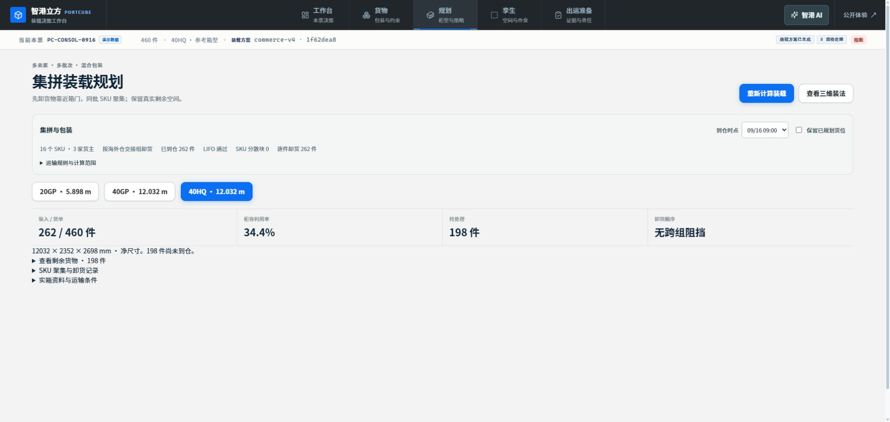
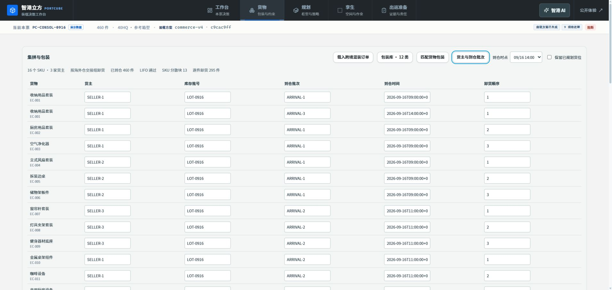
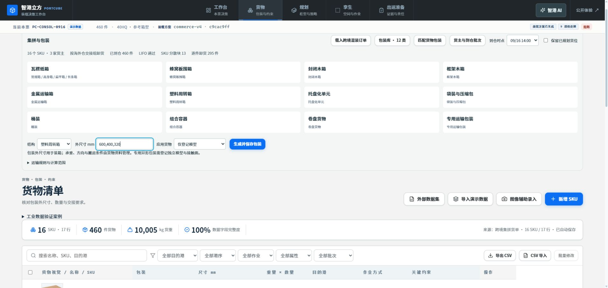
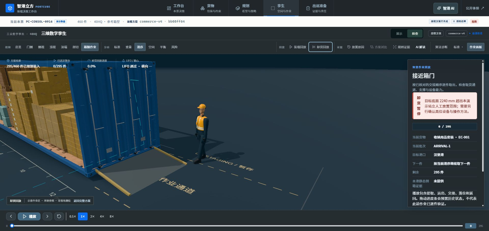
真实页面验收；首页保留既有展示资产，本轮没有批量替换全站。
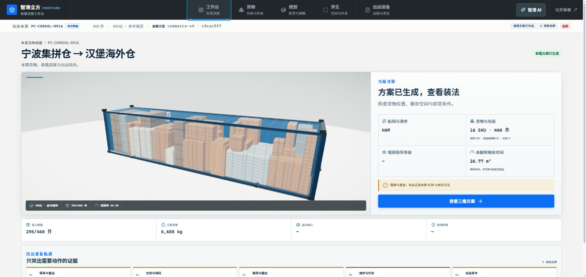
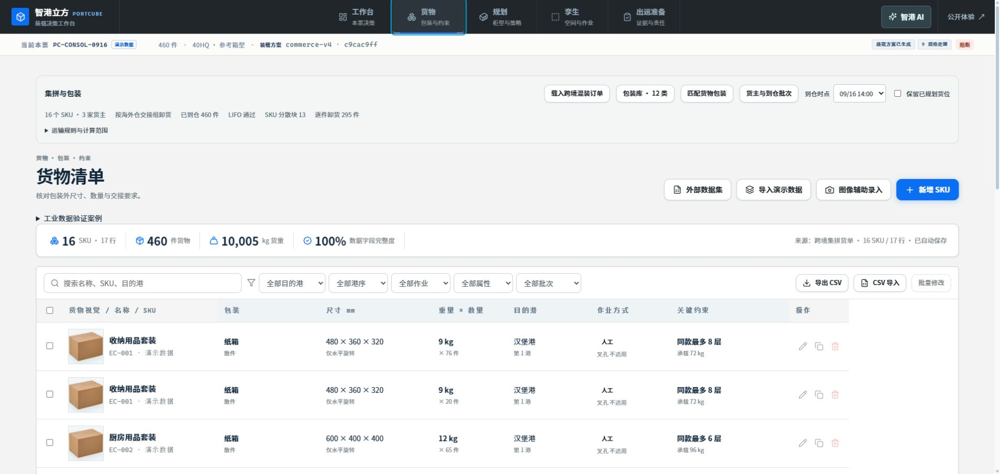
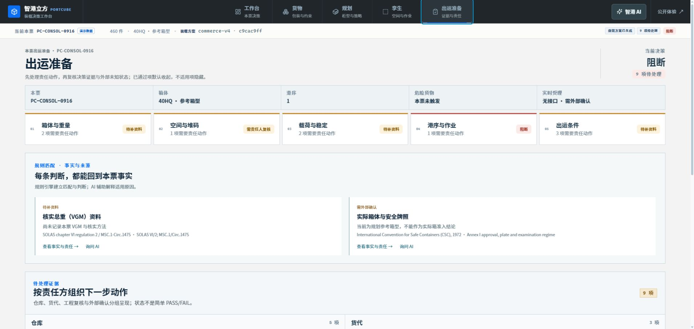
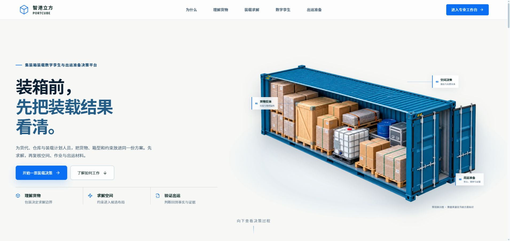
以下为前段 251 件方案，保留追溯。与最终 295 件方案库存相同但摆放不同，不是灯光或算法的严格单变量对照。
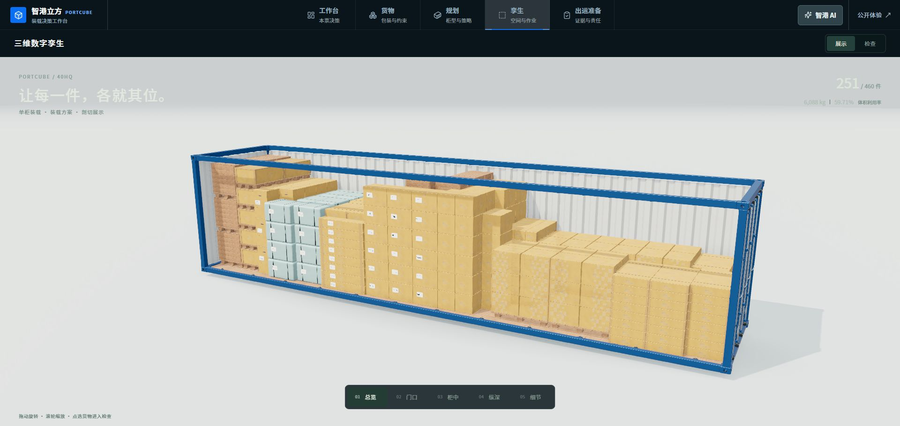
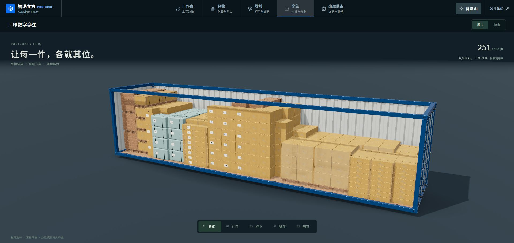
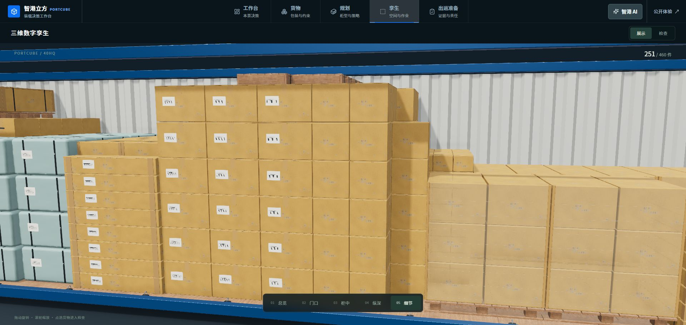